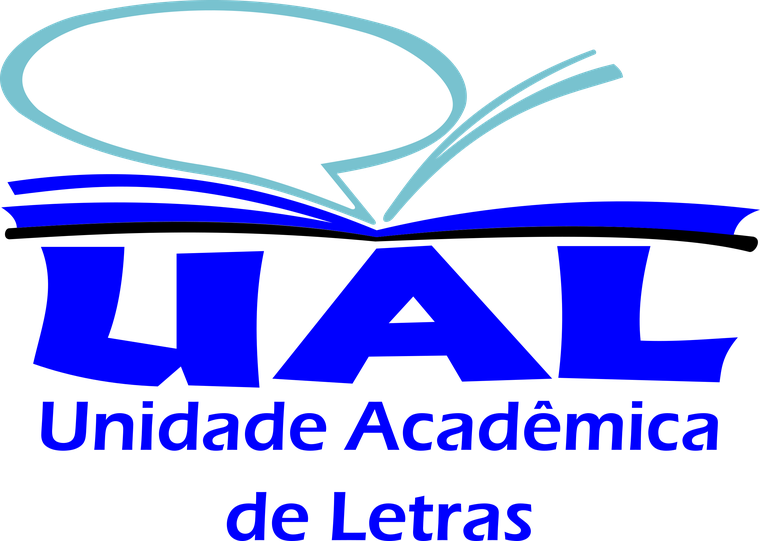

Licenciatura
Letras
Centro de Humanidades · UFCG
Coordenação
Coordenação: Profa. Girlaine Felisberto de Caldas Aguiar
Secretaria da CGLET: Marciano Siqueira e Hermes Levi
Documentos do curso
Estágio Supervisionado
Cadastro do estágio obrigatório junto à Coordenação de Graduação em Letras
Defesa de Trabalho de Conclusão de Curso
Matrícula em monografia, indicação de orientador e defesa · tramitação pelo SEI
Conforme o art. 143 da Resolução CSE nº 11/2024, compete à Coordenação do curso a mediação entre discentes e orientadores. A tramitação é feita por via digital, no SEI, para maior eficiência administrativa.
O pedido deve observar a data limite determinada pela Administração Executiva Colegiada da UAL/CH ou pela coordenação do curso. Depois dessa data não são realizadas matrículas em monografia, nos termos do art. 254 da Resolução CSE nº 11/2024.
Fluxo de cadastramento e matrícula
- Abertura do processo O discente abre no SEI um processo do tipo Graduação: Trabalho de Conclusão de Curso (Matrícula/Indicação de Orientador) e anexa o Formulário de Cadastro de Orientação Acadêmica preenchido e assinado.
- Efetivação da matrícula O TCC é atividade que não forma turma: pelo art. 256 da Resolução CSE nº 11/2024, a matrícula é realizada pela Coordenação do Curso, mediante pedido do próprio discente pelo sistema de gestão acadêmica.
- Mudança de fase processual Depois da matrícula, a Coordenação altera o tipo do processo para Graduação: Defesa de Trabalho de Conclusão de Curso.
- Documentação pós-defesa Versão final do TCC acompanhada da folha de aprovação assinada pela banca e da ficha catalográfica.
Ficha catalográfica
Solicitada à Biblioteca Central depois da defesa, antes do depósito do trabalho
- Solicitação Preencha o modelo de formulário e reúna o trabalho acadêmico completo, com a folha de aprovação datada e assinada pela banca examinadora — as assinaturas podem ser de próprio punho ou eletrônicas. Envie os dois arquivos para fichacatalografica@setor.ufcg.edu.br.
- Formatação Apresente o trabalho conforme a ABNT NBR 14724:2024. O documento de orientações traz o check-list dos elementos essenciais exigidos para o depósito na Biblioteca Digital de Teses e Dissertações (BDTD) da UFCG.
- Depósito na BDTD Abra no SEI um processo específico para o depósito, escolhendo entre depósito autorizado, em que o trabalho fica disponível à comunidade, e depósito embargado, com acesso restrito por três anos — usado quando há pedido de patente ou informações confidenciais.
- Depósito no SIGAA Procure a coordenação do curso para orientação quanto ao depósito do TCC no SIGAA.
Biblioteca Central da UFCG
- fichacatalografica@setor.ufcg.edu.br · (83) 2101-1098 (Setor de Referência)
- bibliotecacentral@setor.ufcg.edu.br · (83) 2101-1090 · (83) 2101-1101
Documentos
Normas e diretrizes
Normas da UFCG que alcançam todos os cursos de graduação da UAL/CH
Corpo docente
Dados do SIGAA, atualizados pelos próprios docentes
Efetivos
-

Aline Risseli Florindo Silva Fernandes
GraduaçãoLetras — Libras · Universidade Federal de Santa Catarina (UFSC)
-

Conceicao de Maria Costa Saude
DoutoradoLinguagem e Ensino · Universidade Federal de Campina Grande (UFCG)
-
Ewerton Carlos Matos Marques
MestradoLetras e Linguística · Universidade Federal de Alagoas (UFAL)
-

Girlaine Felisberto de Caldas Aguiar
DoutoradoLinguagem e Ensino · Universidade Federal de Campina Grande (UFCG)
-

Jose Tiago Ferreira Belo
MestradoEducação · Universidade do Vale do Rio dos Sinos (UNISINOS)
-

Joyce Gomes de Alencar Oliveira
MestradoLetras e Linguística · Universidade Federal de Alagoas (UFAL)
-

Juliana Fernandes Montalvao Mateus
MestradoEducação Bilíngue · Instituto Nacional de Educação de Surdos (INES)
-

Michelle Melo Gurjao Roldao
DoutoradoCiências da Linguagem · Universidade Católica de Pernambuco (UNICAP)
-

Shayane Tayana Martins
EspecializaçãoLíngua Brasileira de Sinais · Universidade Salgado de Oliveira
-

Shirley Barbosa das Neves
DoutoradoEducação · Universidade Federal da Paraíba (UFPB)
-

Wilsynnara Melo da Silva Lira
MestradoEducação Especial · Universidade Federal do Rio Grande do Norte (UFRN)
Substitutos
-

Jessica Millena Figueiredo Martins
MestradoLinguagem e Ensino · Universidade Federal de Campina Grande (UFCG)
-

Kivia Karla de Figueiredo Marinho
MestradoLinguagem e Ensino · Universidade Federal de Campina Grande (UFCG)
-

Morgana Katarine Benevides Neves
MestradoLinguagem e Ensino · Universidade Federal de Campina Grande (UFCG)